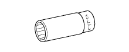

FUEL PUMP > DISASSEMBLY > Preparation

| Container | - |
| Dial indicator | - |
| Hammer | - |
| Magnetic stand | - |
| Needle nose pliers | - |
| Ohmmeter | - |
| Torque wrench | - |
 | 09010-3C100 | Set, Hexagon Wrench | - |
 | (09013-6C100) | Socket Hexagon 5mm | - |
 | 09012-2C510 | Deep Socket Wrench 19mm | - |
| 09013-6C510 | Long Socket Hexagon 6mm | - | |
 | 09082-00040 | TOYOTA Electrical Tester | - |
 | (09083-00150) | Test Lead Set | - |
| Toyota Genuine Seal Packing Black, Three Bond 1207B or equivalent | - |
| Toyota Genuine Adhesive 1344, Three Bond 1344 or the equivalent | - |